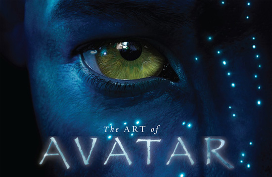
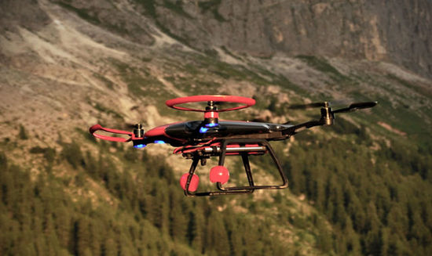
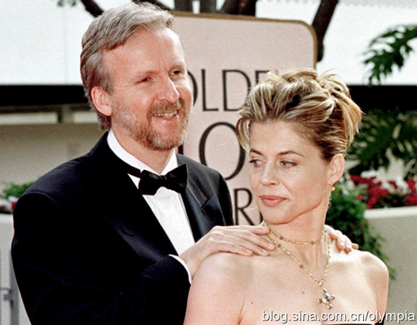

成长故事
成长故事卡梅隆：从卡车司机到阿凡达导演(Cameron: from truck drivers to Afanda)
美国著名导演詹姆斯・卡梅隆（James Cameron），在创造了全球票房18亿美元的《泰坦尼克号》之后，销声匿迹，十余年后，他携《阿凡达》归来，成为电影市场的又一枚重磅炸弹。可是有多少人知道，卡梅隆的阿凡达之梦，开始于32年前。
美国著名导演詹姆斯・卡梅隆（James Cameron），在创造了全球票房18亿美元的《泰坦尼克号》之后，销声匿迹，十余年后，他携《阿凡达》归来，成为电影市场的又一枚重磅炸弹。可是有多少人知道，卡梅隆的阿凡达之梦，开始于32年前……
卡车司机的导演梦
1977年，22岁的卡车司机詹姆斯・卡梅隆和朋友去看《星球大战》，朋友陶醉于电影之中不能自拔，卡梅隆却在离开影院之后准备打拳击发泄一下。他大学辍学，整天在南加利福尼亚奥兰治县开车运送校餐。但在闲暇的时候，他绘制小模型，还写科幻小说，可现在，卡梅隆面临一个令人泄气的现实：他幻想的世界已经被卢卡斯（Lucas，《星球大战》导演）带进了人们的生活……
于是，他买了些廉价的摄影器材，试图还原卢卡斯的拍摄过程。他在家中客厅打出刺眼的明亮光线，让摄像机沿一条轨道滚动来演练摄影。他常常整天逡巡于南加州大学图书馆，阅读所有与特效有关的书籍。
他说服了一群当地牙医，投资2万美元，制作卡梅隆版的《星球大战》。他与一个朋友，写了一本名为《世代交替》的剧本，可是，在好莱坞兜售了好几个月，他却空手而归。无奈之下，卡梅隆只好努力去做一些有价值的事：在B级片之王罗杰・科曼手下打工，受雇为电影《世纪争霸战》打造微缩太空飞船。他用自己的方式日渐上位，后来成为科曼旗下的虚拟视觉效果专家之一。
历经14年打造《阿凡达》
1995年，他写了一部长达82页的剧本，讲述当地球沦为暗淡荒原后，一名瘫痪士兵去一个遥远的星球执行任务的故事。这便是日后的《阿凡达》。
卡梅隆想制作一部能真正让观众身临其境的3D影片。有一次，当卡梅隆与水下摄影专家佩斯研究镜头时，他突然问佩斯：我们是否能制造一种高清晰摄像设备，同时可以播放2D图像和3D图像呢？于是，他开始了对新一代摄像机的构想：便携带，数字化，高清晰，3D成像。
发明这种摄像机绝非易事，两个月后，卡梅隆与佩斯来到索尼高清晰相机部，和工程师面对面交流。索尼同意建一条新的生产线，不过需要卡梅隆他们提供原型，佩斯着手研发。三个月后，新摄像机弄出来了，摄像机实验效果不错，3D成像准确。
摄像机的问题解决了，遗憾的是，影院不愿意采用这种技术，因为这需要每个影院大约投资10万美元进行设备更新，卡梅隆决定亲自和影院业主谈谈。2005年3月，在一次电影展览会上，他全力以赴宣传自己的新放映系统：“世界已迈入新的电影时代。”于是，2005-2009年间，3000多家影院能播放立体电影。
2005年春，卡梅隆说服福克斯公司投资1.95亿美元拍摄《阿凡达》。8月，他聘请南加州大学的语言专家保罗（Paul Former），为剧本中的纳美族设计一套全新的语言系统。随着语言系统的建立，卡梅隆又开始着手为潘多拉星球上的动植物命名。每种动植物都有纳美族名、拉丁名和俗称，卡梅隆还生怕不够逼真，专门聘请加州大学的植物科学系主任朱迪・霍尔特（Jodie Holt），为他创造的几十种植物编写详细的科学说明。
这些幕后工作永远不会在银幕上展现，但卡梅隆却乐此不疲。他聘请了很多专家，比如天体物理学家、音乐教授、考古学家等。他们计算出潘多拉星球的大气密度，创建外星音乐。
注：文章转载自网络
回响：从卡车司机到阿凡达导演，卡梅隆给我们带来的不仅仅是一部部伟大的电影作品，更值得让我们学习的是他那为了实现长达32年之久梦想的精神。其实，我们每个人都可以创造出属于自己心中的那个“阿凡达”。
卡梅隆新闻
News about James Cameron
卡梅隆的无人机设想
著名导演詹姆斯・卡梅隆也开始关注无人机拍摄技术了。...
- 《阿凡达》导演卡梅隆助《终结者5》暑期争霸
- 奥斯卡名导卡梅隆举办无人机大赛为新片选机
- 卡梅隆想用无人机拍电影无人机影视要再火一把?
盘点卡梅隆的感情世界
Emotional World
卡梅隆与他的五任妻子
好莱坞顶尖大导演詹姆斯・卡梅隆是个在好莱坞却是个名声最坏异类...
- 第一任妻子莎朗.威廉斯（服务员）
- 第二任妻子吉尔.安妮.赫德（制片人）
- 第三任妻子凯瑟琳.毕格罗（导演）
- 第四任妻子琳达.汉密尔顿（演员）
- 现任妻子苏茜.埃米斯（演员）
优秀作品
Excellent works
历年优秀作品赏析
1954年8月16日生于加拿大的著名电影导演，擅长拍摄动作片以及科幻电影...
- 阿凡达
- 深海异形
- 食人鱼
- 深渊幽灵
- 泰坦尼克
- 真实的谎言